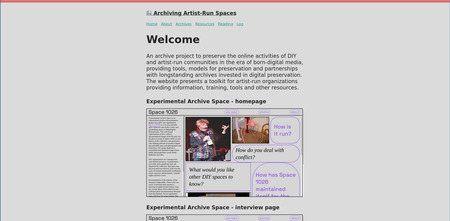
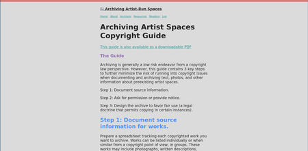
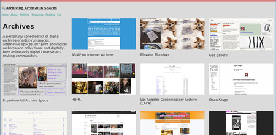

Lee Tusman
↩ Everyday
<
>
Title: Archiving Artist-Run Spaces site
Year: 2023
Medium: Website
URL: leetusman.com/archiving-artist-spaces↩
Description:
An archive project to preserve the online activities of DIY and artist-run communities in the era of born-digital media, providing tools, models for preservation and partnerships with longstanding archives invested in digital preservation. The website presents a toolkit for artist-run organizations providing information, training, tools and other resources.



 ©opyleft
©opyleft